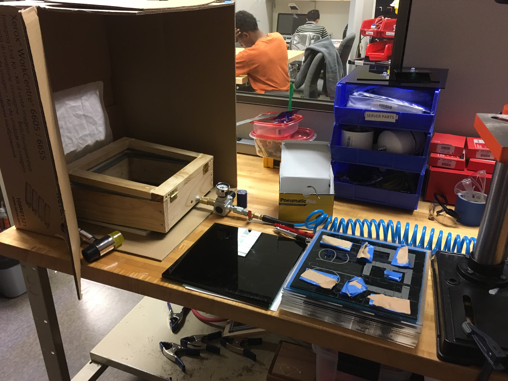
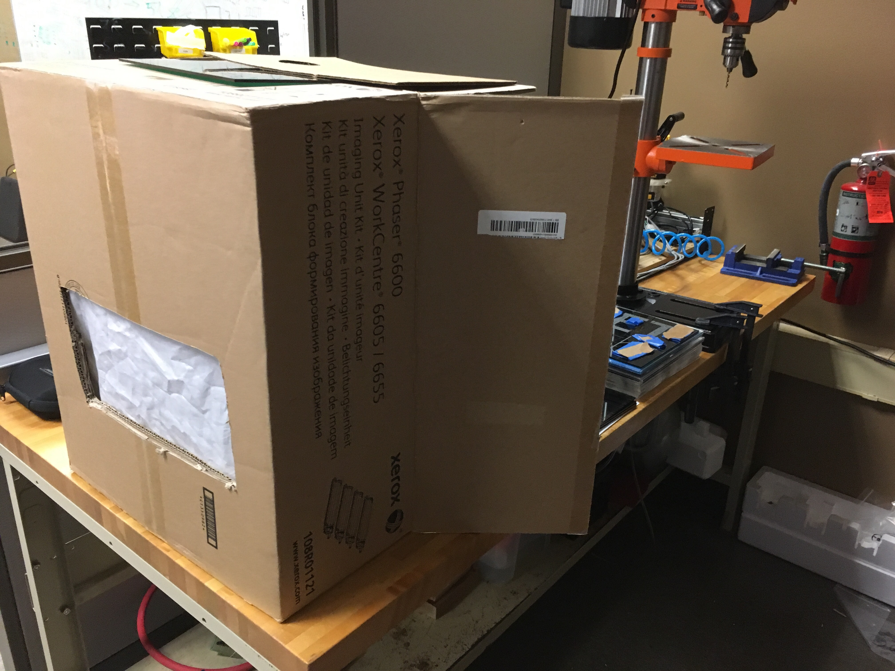
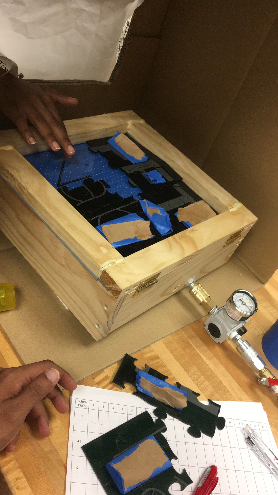
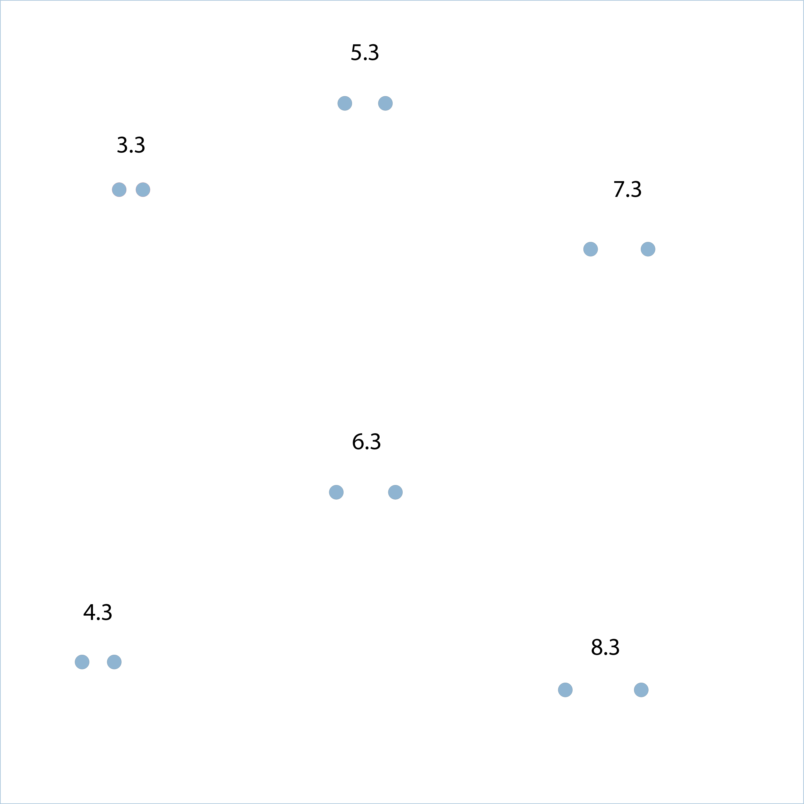
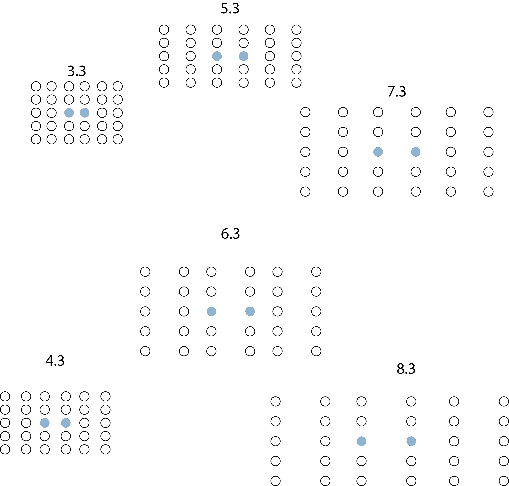
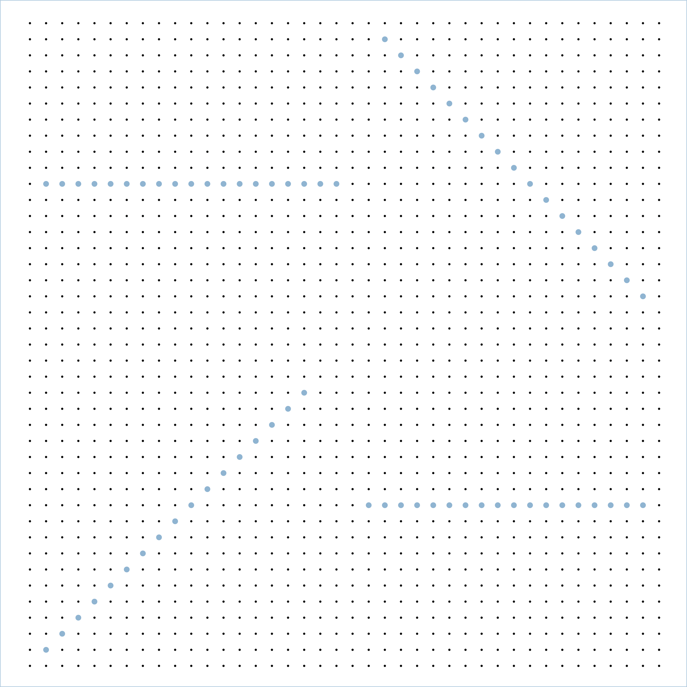
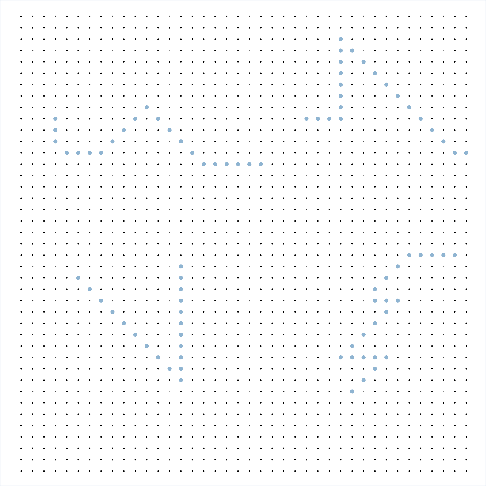
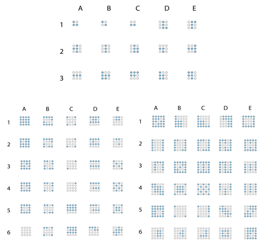
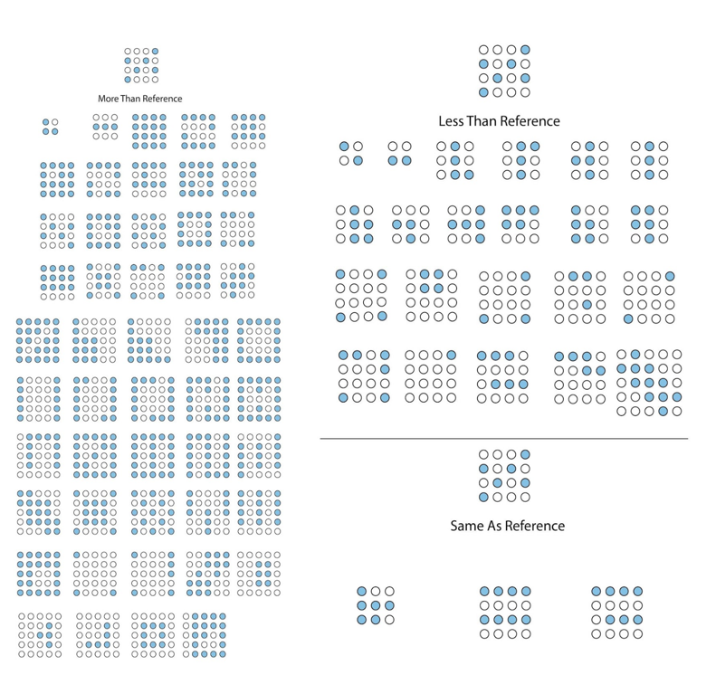

Building a contactless air jet haptic display box for tactile interactions.
Tanmay Songade
What?
- Designed an air-tight box
- Built an air-tight box with different materials
- Designed air haptic plates
- Conducted pilot studies
Why?
- Limited access of graphics for individuals who are blind or visually impaired
- Discover patterns and spatial relationships information is lost when replacing these graphics with words
- Braille embossed diagrams can be cumbersome, time consuming and are easily subject to wear and tear
- AR and VR are becoming increasingly common as modes of communication and information presentation
How?
- Boxes
- Air valves
- Air haptic plates
- Pilot Studies
Studies
- Two Point Discrimination
- Line Following
- Intensity Perception
Boxes

Final box for pilot studies



Participants
| First | Second | |
|---|---|---|
| Gender | Male | Female |
| Age | 25-30 | 25-30 |
| Profession | RIT CS Student | RIT ID Student |
Trials
| Studies | First | Second |
|---|---|---|
| Two Point Discrimination | 120 | 120 |
| Line Following | 40 | 120 |
| Intensity Perception | N/A | 81 |
Pilot Study 1
Two Point Discrimination

Line Following
Results
Two Point Discrimination and Line Following
100% success rate
Flaws
- Biased
- Covering Plates
- High Learnability
Pilot Study 2
Two Point Discrimination

Line Following

Line Following

Intensity Perception

Results
Two Point Discrimination and Line Following
100% success rate
Intensity Perception

Conclusion
Second participant was able to perform the studies smoothly
The new system architecture has no flaws and can be used for further studies